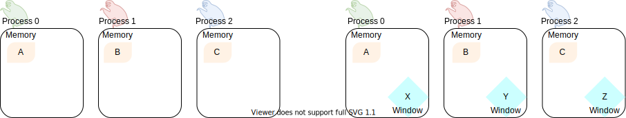

One-sided communications: functions¶
Questions
What functions should you use for RMA?
Objectives
Learn how to create memory windows.
Learn how to access remote memory windows.
RMA anatomy¶
One-sided communication in MPI is achieved in three steps, which map onto three sets of functions:
- Windows
Make memory available on each process for remote memory accesses. We use memory windows, which are objects of type
MPI_Winproviding handles to remotely-accessible memory. MPI provides 4 collective routines for the creation of memory windows:MPI_Win_allocateallocates memory and creates the window object.MPI_Win_createcreates a window from already allocated memory.MPI_Win_allocate_sharedcreates a window from already allocated MPI shared memory.MPI_Win_create_dynamiccreates a window from allocated memory, but the window-memory pairing is deferred.
A handle of type
MPI_Winmanages memory made available for remote operations on all ranks in the communicator. Memory windows must be explicitly freed after use withMPI_Win_free.- Load/store
Load/store/transform data in remote windows. We can identify an origin and a target process. At variance with two-sided communication, the origin process fully specifies the data transfer: where the data comes from and where it is going to. There are three main groups of MPI routines for this purpose:
Put
MPI_PutandMPI_RputGet
MPI_GetandMPI_RgetAccumulate
MPI_Accumulate,MPI_Raccumulateand variations thereof.
- Synchronization
Ensure that the data is available for remote memory accesses. The load/store routines are non-blocking and the programmer must take care that subsequent accesses are safe and correct. How synchronization is achieved depends on the one-sided communication paradigm adopted:
Active if both origin and target processes play a role in the synchronization. This is indeed the message passing model of parallel computation.
Passive if the origin process orchestrates data transfer and synchronization. Conceptually, this is closely related to the shared memory model of parallel computation: the window is the shared memory in the communicator and every process can operate on it, seemingly independently of each other.
There are three sets of routines currently available in MPI:
MPI_Win_fencethis achieves synchronization in the active target communication paradigm.MPI_Win_start,MPI_Win_complete,MPI_Win_post,MPI_Win_waitare also used in the active target communication paradigm.MPI_Win_lock,MPI_Win_unlockwhich enables synchronization in the passive target paradigm.
We will discuss synchronization further in the next episode One-sided communication: synchronization.
The timeline of window creation, calls to RMA routines, and synchronization
in an application which uses MPI one-sided communication.
The creation of MPI_Win objects in each process in the communicator
allows the execution of RMA routines. Each access to the window must be
synchronized: to ensure safety and correctness of the application.
Note that any interaction with the memory window must be protected by
calls to synchronization routines: even local load/store and/or two-sided
communication.
The events in between synchronization calls are said to happen in epochs.¶
RMA in action
In this example, we will work with two processes:
Rank 1, will allocate a buffer and expose it as a window.
Rank 0, will get the values from this buffer.
First of all, we create the buffer on all ranks. However, only rank 1 will fill it with some values. We will see that window creation is collective call for all ranks in the given communicator.
int window_buffer[4] = {0};
if (rank == 1) {
window_buffer[0] = 42;
window_buffer[1] = 88;
window_buffer[2] = 12;
window_buffer[3] = 3;
}
MPI_Win win;
MPI_Win_create(&window_buffer, (MPI_Aint)4 * sizeof(int), sizeof(int),
MPI_INFO_NULL, comm, &win);
Every rank has now a window, but only the window on rank 1 has values different from 0. Before doing anything on the window, we need to start an access epoch:
MPI_Win_fence(0, win);
Process 0 can now load the values into its local memory:
int getbuf[4];
if (rank == 0) {
// Fetch the value from the MPI process 1 window
MPI_Get(&getbuf, 4, MPI_INT, 1, 0, 4, MPI_INT, win);
}
We synchronize again once we are done with RMA operations: this access epoch is closed. This is needed even if subsequent accesses are local!
MPI_Win_fence(0, win);
Remember to free the window object!
MPI_Win_free(&win);
Download the full working source code.
Discussion
Are there similarities between one-sided and non-blocking communication? In which contexts would you prefer one over the other?
Non-blocking vs RMA
Can you re-express the code shown in the type-along with MPI_Isend/MPI_Recv?
You can download the scaffold source code and also a working solution.
Window creation¶
The creation of MPI_Win objects is a collective operation: each process in
the communicator will reserve the specified memory for remote memory accesses.
Use this function to allocate memory and create a window object out of it.
int MPI_Win_allocate(MPI_Aint size,
int disp_unit,
MPI_Info info,
MPI_Comm comm,
void *baseptr,
MPI_Win *win)
We can expose an array of 10 double-s for RMA with:
// allocate window
double *buf;
MPI_Win win;
MPI_Win_allocate((MPI_Aint)(10 * sizeof(double)), sizeof(double),
MPI_INFO_NULL, MPI_COMM_WORLD, &buf, &win);
// do something with win
// free window and the associated memory
MPI_Win_free(&win);
Parameters
sizeSize in bytes.
disp_unitDisplacement units. If
disp_unit = 1, then displacements are computed in bytes. The use of displacement units can help with code readability and is essential for correctness on heterogeneous systems, where the sizes of the basic types might differ between processes. See also Derived datatypes.infoAn info object, which can be used to provide optimization hints to the MPI implementation. Using
MPI_INFO_NULLis always correct.commThe (intra)communicator.
baseptrThe base pointer.
winThe window object.
With this routine you can tell MPI what memory to expose as window. The memory must be already allocated and contiguous, since it will be specified in input as base address plus size in bytes.
int MPI_Win_create(void *base,
MPI_Aint size,
int disp_unit,
MPI_Info info,
MPI_Comm comm,
MPI_Win *win)
What if the memory is not allocated? We advise to use MPI_Alloc_mem:
// allocate memory
double *buf;
MPI_Alloc_mem((MPI_Aint)(10 * sizeof(double)), MPI_INFO_NULL, &buf);
// create window
MPI_Win win;
MPI_Win_create(buf, (MPI_Aint)(10 * sizeof(double)), sizeof(double),
MPI_INFO_NULL, MPI_COMM_WORLD, &win);
// do something with win
// free window
MPI_Win_free(&win);
// free memory
MPI_Free_mem(buf);
You must explicitly call MPI_Free_mem to deallocate memory obtained
with MPI_Alloc_mem.
Parameters
baseThe base pointer.
sizeSize in bytes.
disp_unitDisplacement units. If
disp_unit = 1, then displacements are computed in bytes. The use of displacement units can help with code readability and is essential for correctness on heterogeneous systems, where the sizes of the basic types might differ between processes. See also Derived datatypes.infoAn info object, which can be used to provide optimization hints to the MPI implementation. Using
MPI_INFO_NULLis always correct.commThe (intra)communicator.
winThe window object.
Note
The memory window is usually a single array: the size of the window object then coincides with the size of the array. If the base type of the array is a simple type, then the displacement unit is the size of that type, e.g.
doubleandsizeof(double). You should use a displacement unit of 1 otherwise.
Window creation
Let’s look again at the initial example in the type-along. There we published
an already allocated buffer as memory window. Use the examples above to
figure out how to switch to using MPI_Win_allocate
You can download the scaffold source code and also a working solution.
RMA operations¶
Store data from the origin process to the memory window of the target process. The origin process is the source, while the target process is the destination.
int MPI_Put(const void *origin_addr,
int origin_count,
MPI_Datatype origin_datatype,
int target_rank,
MPI_Aint target_disp,
int target_count,
MPI_Datatype target_datatype,
MPI_Win win)
Load data from the memory window of the target process to the origin process. The origin process is the destination, while the target process is the source.
int MPI_Get(void *origin_addr,
int origin_count,
MPI_Datatype origin_datatype,
int target_rank,
MPI_Aint target_disp,
int target_count,
MPI_Datatype target_datatype,
MPI_Win win)
Parameters
Both MPI_Put and MPI_Get are non-blocking: they are completed
by a call to synchronization routines.
The two functions have the same argument list. Similarly to MPI_Send
and MPI_Recv, the data is specified by the triplet of address, count,
and datatype.
For the data at the origin process this is: origin_addr,
origin_count, origin_datatype.
On the target process, we describe the buffer in terms of displacement,
count, and datatype: target_disp, target_count, target_datatype.
The address of the buffer on the target process is computed using the base
address and displacement unit of the MPI_Win object:
target_addr = win_base_addr + target_disp * disp_unit
With MPI_Put, the origin triplet specifies the local send
buffer; while with MPI_Get it specifies the local receive
buffer.
The target_rank parameter is, as the name suggests, the rank of the
target process in the communicator.
Using MPI_Put
Reorganize the sample code of the previous exercise such that rank 1 stores
values into rank 0 memory window with MPI_Put, rather than rank 0
loading them with MPI_Get.
Download the scaffold source code to get started.
You can download a working solution.
Store data from the origin process to the memory window of the target process and combine it using one the predefined MPI reduction operations.
int MPI_Accumulate(const void *origin_addr,
int origin_count,
MPI_Datatype origin_datatype,
int target_rank,
MPI_Aint target_disp,
int target_count,
MPI_Datatype target_datatype,
MPI_Op op,
MPI_Win win)
The argument list to MPI_Accumulate is the same as for MPI_Put,
with the addition of the op parameter with type MPI_Op, which
specifies which reduction operation to execute on the target process.
This routine is elementwise atomic: accesses from multiple processes will
be serialized in some order and no race conditions can thus occur. You still
need to exercise care though: reductions are only deterministic if the
operation is associative and commutative for the given datatype. For
example, MPI_SUM and MPI_PROD are neither associative nor
commutative for floating point numbers!
Using MPI_Accumulate
Download the scaffold source code and
complete the function calls to:
Create a window object from an allocated buffer:
int buffer = 42;
Let each process accumulate its rank in the memory window of the process with rank 0. We want to obtain the sum of the accumulating values.
With 2 processes, you should get the following output to screen:
[MPI process 0] Value in my window_buffer before MPI_Accumulate: 42.
[MPI process 1] I accumulate data 1 in MPI process 0 window via MPI_Accumulate.
[MPI process 0] Value in my window_buffer after MPI_Accumulate: 43.
You can download a working solution.
Other routines for RMA operations are:
- Request-based variants
These routines return a handle of type
MPI_Requestand synchronization can be achieved withMPI_Wait.MPI_RgetMPI_RputMPI_RaccumulateMPI_Rget_accumulate
- Specialized accumulation variants
These functions perform specialized accumulations, but are conceptually similar to
MPI_Accumulate.MPI_Get_accumulateMPI_Fetch_and_opMPI_Compare_and_swap
Describe the sequence MPI calls connecting the before and after schemes.
- 
Window creation with
MPI_Win_allocate.Window creation with
MPI_Win_createfollowed byMPI_Alloc_mem.Dynamic window creation with
MPI_Win_create_dynamic.Memory allocation with
MPI_Alloc_memfollowed by window creationMPI_Win_create.
Window creation with
MPI_Win_allocateandMPI_Getfrom origin process 2 to target process 1.Window creation with
MPI_Win_create_dynamicandMPI_Putfrom origin process 1 to target process 2.Window creation with
MPI_Win_createandMPI_Getfrom origin process 1 to target process 2.Window creation with
MPI_Win_createandMPI_Putfrom origin process 2 to target process 1.
Solution
Both options A and D are correct. With option A, we let MPI allocate memory on each process and create a
MPI_Winwindow object. With option C, the memory allocation and window object creation are decoupled and managed by the programmer. If you have the choice, option A should be preferred: the MPI library might be able to better optimize window creation.Option D is correct. The memory is already allocated on each process, maybe through use of
MPI_Alloc_mem, and the window can be created with a call toMPI_Win_create. The subsequent data movement is a remote store operation. The callMPI_Putis issued by process 2, the origin process, to store itsCvariable to the memory window of process 1, the target process.